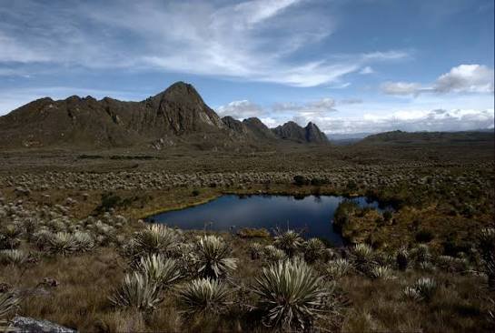
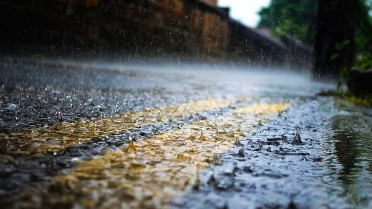
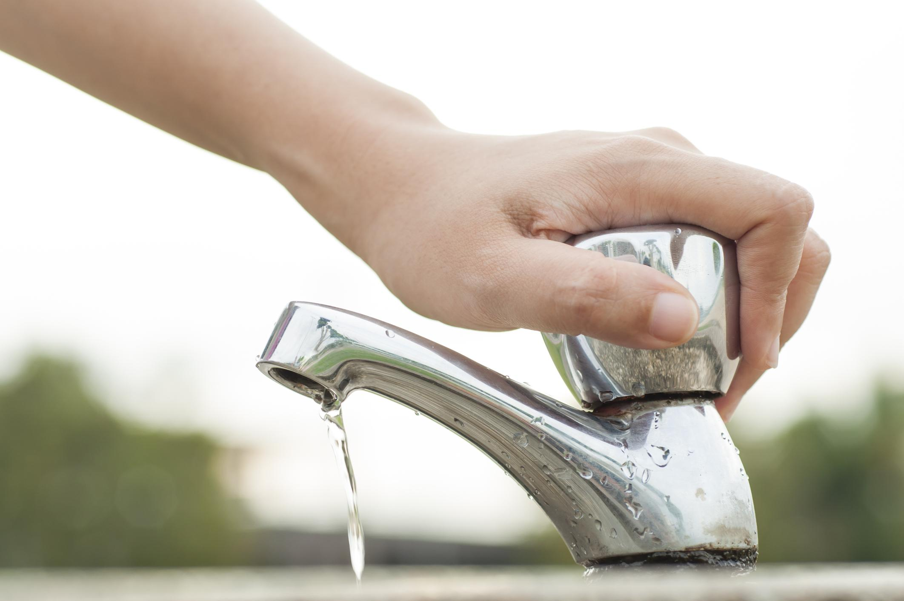
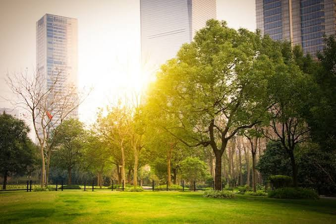

🌿 Educación Ambiental: Conocer para Cuidar
Porque cuidar el planeta empieza por entenderlo

🌍 ¿Qué es la educación ambiental?
La educación ambiental no es solo aprender a no tirar basura o cerrar la llave del agua. Es mucho más amplio: consiste en comprender que nosotros formamos parte de la naturaleza, no estamos separados de ella. Todo lo que hacemos afecta al entorno y todo lo que pasa en la naturaleza nos afecta a nosotros.
En un país tan rico en diversidad como Colombia, conocer nuestro entorno es una responsabilidad. Saber de dónde viene el agua que bebemos, cómo se forman las nubes que nos dan lluvia y por qué los bosques refrescan el aire nos convierte en personas más conscientes y responsables.
Frente a fenómenos como El Niño, la educación se vuelve nuestra herramienta más fuerte: quien entiende por qué falta el agua, sabrá valorarla y cuidarla. Quien comprende cómo cambia el clima, ayudará a protegerlo.
🏙️ El clima de Bogotá y su cuidado
Bogotá tiene un clima especial: por estar ubicada sobre una gran sabana, rodeada de montañas y a más de 2.600 metros de altura, sus temperaturas suelen ser frescas durante todo el año. Sin embargo, quienes han vivido mucho tiempo en la ciudad han notado cambios importantes:
- Las temperaturas máximas han subido: hay días más calurosos que hace 30 o 40 años
- Las lluvias se han vuelto menos predecibles: a veces llueve mucho en poco tiempo y luego hay meses secos
- Los páramos que nos dan agua, como Chingaza, han reducido su nivel de agua en épocas secas
- La ciudad, al crecer con más cemento y menos árboles, retiene más calor que antes

Esto no significa que Bogotá deje de ser fresca, pero sí nos avisa que debemos cuidar más nuestro entorno. Plantar árboles, proteger los humedales, ahorrar agua y cuidar los páramos son acciones que ayudan a que la ciudad mantenga su frescura y su agua.
💧 El agua: el tesoro más valioso
El agua no es infinita. Aunque la veamos caer del cielo, solo una pequeña parte es agua dulce que podemos beber. En Bogotá, el agua que llega a nuestros hogares viaja desde los páramos, donde la lluvia se guarda en el suelo y baja poco a poco por los ríos. Cuando El Niño reduce las lluvias, ese almacén natural se vacía más rápido.

Cada persona puede contribuir a cuidar el agua con acciones sencillas pero poderosas:
- En la ducha: reducir el tiempo ayuda a ahorrar muchos litros cada día
- Al cepillarse los dientes: cerrar la llave mientras no se usa
- Revisar fugas: una llave que gotea desperdicia cientos de litros al mes
- Reutilizar: el agua de lavar frutas puede servir para regar plantas
- Compartir: explicar a la familia por qué es importante ahorrar agua
🌳 Los árboles y la ciudad
Los árboles son los pulmones de Bogotá. Dan sombra, enfrían el aire, guardan agua en el suelo y dan hogar a aves y animales pequeños. Cuando desaparecen zonas verdes, la ciudad se calienta y pierde su capacidad natural de regular el clima.

Proteger lo que existe y plantar nuevos árboles donde sea posible es una de las mejores formas de cuidar el clima local. No necesitamos ser dueños de un terreno: en el colegio, en el patio de la casa o en un espacio comunitario, cada planta cuenta.
🤝 Acciones de todos los días
Cuidar el medio ambiente no requiere hacer cosas extraordinarias, sino hacer las cosas bien todos los días. Aquí tienes acciones que puedes empezar hoy mismo:
🗑️ Separar la basura
Papel, plástico, vidrio y materia orgánica por separado. Así se aprovecha más y se contamina menos.
🚶 Caminar o usar transporte público
Menos carros significan menos gases que calientan el aire. En Bogotá, usar la bicicleta o el TransMilenio ayuda mucho.
🔥 No quemar nada
Las quemas destruyen el suelo, contaminan el aire y pueden iniciar incendios grandes, especialmente en épocas secas.
🗣️ Hablar con otros
Lo que aprendes, compártelo. El cambio llega cuando todos saben por qué deben cuidar su entorno.
✨ Conclusión
El clima de Bogotá y de Colombia no lo cuidan solo las autoridades o los científicos: lo cuidamos todos. Cada gota de agua ahorrada, cada árbol protegido y cada explicación que das a alguien suma. La educación ambiental no termina cuando sales del colegio: es para toda la vida y para todo el que te rodea.
"Cuidar no es obligación. Es gratitud con la tierra que nos sostiene."